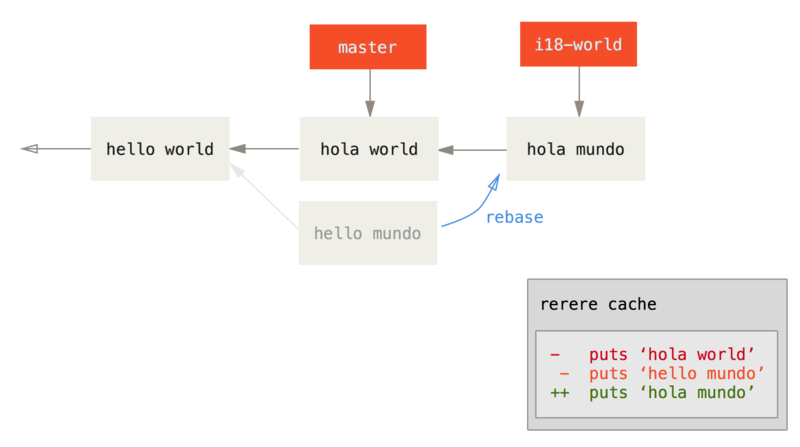

$ git config --global rerere.enabled trueRerere
git rerere 功能是一个隐藏的功能。
正如它的名字 ``reuse recorded resolution'' 所指，它允许你让 Git 记住解决一个块冲突的方法，这样在下一次看到相同冲突时，Git 可以为你自动地解决它。
有几种情形下这个功能会非常有用。
在文档中提到的一个例子是如果你想要保证一个长期分支会干净地合并，但是又不想要一串中间的合并提交。
将 rerere 功能打开后偶尔合并，解决冲突，然后返回到合并前。
如果你持续这样做，那么最终的合并会很容易，因为 rerere 可以为你自动做所有的事情。
可以将同样的策略用在维持一个变基的分支时，这样就不用每次解决同样的变基冲突了。 或者你将一个分支合并并修复了一堆冲突后想要用变基来替代合并 - 你可能并不想要再次解决相同的冲突。
另一个情形是当你偶尔将一堆正在改进的特性分支合并到一个可测试的头时，就像 Git 项目自身经常做的。 如果测试失败，你可以倒回合并之前然后在去除导致测试失败的那个特性分支后重做合并，而不用再次重新解决所有的冲突。
为了启用 rerere 功能，仅仅需要运行这个配置选项：
也通过在特定的仓库中创建 .git/rr-cache 目录来开启它，但是设置选项更干净并且可以应用到全局。
现在我们看一个简单的例子，类似之前的那个。 假设有一个像这样的文件：
#! /usr/bin/env ruby
def hello
puts 'hello world'
end在一个分支中修改单词 hello'' 为 hola''，然后在另一个分支中修改 world'' 为 mundo''，就像之前一样。

当合并两个分支到一起时，我们将会得到一个合并冲突：
$ git merge i18n-world
Auto-merging hello.rb
CONFLICT (content): Merge conflict in hello.rb
Recorded preimage for 'hello.rb'
Automatic merge failed; fix conflicts and then commit the result.你会注意到那个新行 Recorded preimage for FILE。
除此之外它应该看起来就像一个普通的合并冲突。
在这个时候，rerere 可以告诉我们几件事。
和往常一样，在这个时候你可以运行 git status 来查看所有冲突的内容：
$ git status
# On branch master
# Unmerged paths:
# (use "git reset HEAD <file>..." to unstage)
# (use "git add <file>..." to mark resolution)
#
# both modified: hello.rb
#然而，git rerere 也会通过 git rerere status 告诉你它记录的合并前状态。
$ git rerere status
hello.rb并且 git rerere diff 将会显示解决方案的当前状态 - 开始解决前与解决后的样子。
$ git rerere diff
--- a/hello.rb
+++ b/hello.rb
@@ -1,11 +1,11 @@
#! /usr/bin/env ruby
def hello
-<<<<<<<
- puts 'hello mundo'
-=======
+<<<<<<< HEAD
puts 'hola world'
->>>>>>>
+=======
+ puts 'hello mundo'
+>>>>>>> i18n-world
end同样（这并不是真的与 rerere 有关系），可以使用 ls-files -u 来查看冲突文件的之前、左边与右边版本：
$ git ls-files -u
100644 39804c942a9c1f2c03dc7c5ebcd7f3e3a6b97519 1 hello.rb
100644 a440db6e8d1fd76ad438a49025a9ad9ce746f581 2 hello.rb
100644 54336ba847c3758ab604876419607e9443848474 3 hello.rb现在可以通过改为 puts 'hola mundo' 来解决它，可以再次运行 rerere diff 命令来查看 rerere 将会记住的内容：
$ git rerere diff
--- a/hello.rb
+++ b/hello.rb
@@ -1,11 +1,7 @@
#! /usr/bin/env ruby
def hello
-<<<<<<<
- puts 'hello mundo'
-=======
- puts 'hola world'
->>>>>>>
+ puts 'hola mundo'
end所以从本质上说，当 Git 看到一个 hello.rb 文件的一个块冲突中有 hello mundo'' 在一边与 hola world'' 在另一边，它会将其解决为 ``hola mundo''。
现在我们可以将它标记为已解决并提交它：
$ git add hello.rb
$ git commit
Recorded resolution for 'hello.rb'.
[master 68e16e5] Merge branch 'i18n'可以看到它 "Recorded resolution for FILE"。

现在，让我们撤消那个合并然后将它变基到 master 分支顶部来替代它。可以通过使用之前在 [_git_reset] 看到的 reset 来回滚分支。
$ git reset --hard HEAD^
HEAD is now at ad63f15 i18n the hello我们的合并被撤消了。 现在让我们变基特性分支。
$ git checkout i18n-world
Switched to branch 'i18n-world'
$ git rebase master
First, rewinding head to replay your work on top of it...
Applying: i18n one word
Using index info to reconstruct a base tree...
Falling back to patching base and 3-way merge...
Auto-merging hello.rb
CONFLICT (content): Merge conflict in hello.rb
Resolved 'hello.rb' using previous resolution.
Failed to merge in the changes.
Patch failed at 0001 i18n one word现在，正像我们期望的一样，得到了相同的合并冲突，但是看一下 Resolved FILE using previous resolution 这行。
如果我们看这个文件，会发现它已经被解决了，而且在它里面没有合并冲突标记。
$ cat hello.rb
#! /usr/bin/env ruby
def hello
puts 'hola mundo'
end同样，git diff 将会显示出它是如何自动地重新解决的：
$ git diff
diff --cc hello.rb
index a440db6,54336ba..0000000
--- a/hello.rb
+++ b/hello.rb
@@@ -1,7 -1,7 +1,7 @@@
#! /usr/bin/env ruby
def hello
- puts 'hola world'
- puts 'hello mundo'
++ puts 'hola mundo'
end

也可以通过 checkout 命令重新恢复到冲突时候的文件状态：
$ git checkout --conflict=merge hello.rb
$ cat hello.rb
#! /usr/bin/env ruby
def hello
<<<<<<< ours
puts 'hola world'
=======
puts 'hello mundo'
>>>>>>> theirs
end我们将会在 [_advanced_merging] 中看到这个的一个例子。
然而现在，让我们通过运行 rerere 来重新解决它：
$ git rerere
Resolved 'hello.rb' using previous resolution.
$ cat hello.rb
#! /usr/bin/env ruby
def hello
puts 'hola mundo'
end我们通过 rerere 缓存的解决方案来自动重新解决了文件冲突。
现在可以添加并继续变基来完成它。
$ git add hello.rb
$ git rebase --continue
Applying: i18n one word所以，如果做了很多次重新合并，或者想要一个特性分支始终与你的 master 分支保持最新但却不想要一大堆合并，或者经常变基，打开 rerere 功能可以帮助你的生活变得更美好。